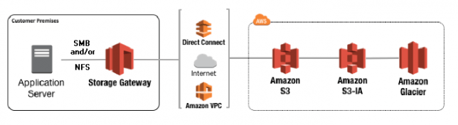

AWS Storage Gateway - O seu file server com espaço infinito
AWS Blog Homelab vExpertCompartilhe esse post nas redes sociais...
Olá Homelabers!
Hoje vou falar sobre um produto da Amazon AWS que tenho estudado recentemente para resolver um problema na FIRMA, o** AWS Storage Gateway**, um serviço de armazenamento híbrido que permite que aplicativos locais tenham acesso - transparente - aos serviços de armazenamento na nuvem da AWS.
Nesse post vou mostrar como instalar e configurar um gateway no seu ambiente VMware vSphere para ser usado como um File Server.
AWS Storage Gateway
O AWS Storage Gateway pode ser usado, basicamente de 3 maneiras diferentes:
File Gateway - Na modalidade File Gateway, você tem disponível um share NFS/SMB onde pode salvar e compartilhar seus arquivos de uma forma transparece. Os arquivos “quentes” ficam gravados em um cache local - com tamanho mínimo de 250GB - e os arquivos são automaticamente enviados para um bucket S3 na AWS. Dessa maneira, você tem disponível um File Server com espaço “INFINITO”.
Volume Gateway - Na modalidade Volume Gateway, você tem disponível um volume iSCSI como se fosse um storage normal, esse volume pode ser apresentado para suas aplicações - hypervisor, VM, etc ou mesmo para um storage. O Volume Gateway mantém um cache dos dados acessados recentemente ou uma cópia completa do volume no local.
Tape Gateway - Na modalidade Tape Gateway, você tem disponível um sistema de BIBLIOTECA DE FITAS VIRTUAIS, ou seja, você pode aposentar o seu robô de fita LTO e passar a usar o Tape Gateway como um target no seu sistema de backup.
Para testar alguns cenários, eu subi uma instância do AWS Storage Gateway no meu lab e vou mostrar a vocês, como é simples de configurar e usar.
Como instalar e configurar AWS Storage Gateway no VMware vSphere

O que você vai precisar:
* Ambiente Virtualizado - Você pode utilizar o VMware vSphere ou o Microsoft Hyper-V ou até mesmo o Virtualbox =)
* Conta na AWS
* Virtual Appliance do AWS Storage Gateway
Criando o Storage Gateway na AWS:
* Acesse o console da AWS e procure o serviço AWS Storage Gateway - https://console.aws.amazon.com/storagegateway/
* Clique em Get Started
* Selecione File Gateway
* Seleciona a sua plataforma, no nosso caso vamos utilizar o VMware vSphere
* Faça o Download do Virtual Appliance
Agora vamos deixar o console da AWS e fazer o deploy do Virtual Appliance no VMware vSphere. O deploy é bastante simples, como qualquer outro OVA, mas existe um ponto de atenção: O Virtual Appliance é criado com apenas um disco de sistema, e você vai precisar de outro disco para ser o cache. Adicione esse disco ANTES de criar o gateway na console AWS. O tamanho mínimo do cache é 150GB.
_Lembrando que esse cache é onde ficarão seus arquivos “hot”, enquanto tiver espaço, os arquivos permanecerão no appliance local - acesso mais rápido. Você deve desenhar a solução pensando no seu ambiente, quanto você quer ter de arquivos no seu cache. _
Após o deploy do virtual appliance e adicionar o disco, ligue a VM e anote o endereço IP, você vai precisar disso na configuração da console AWS.
Você pode acessar a console do virtual appliance e alterar o endereço IP - o default é DHCP - o DNS, etc. A usuário e senha do virtual appliance do AWS Storage Gateway é admin:password.
Agora vamos voltar ao console da AWS para terminar a configuração.
* Selecione Public no Service End Point. Você pode utilizar uma VCP, mas o processo é um pouco mais complicado.
* Digite o endereço IP do virtual appliance que você acabou de instalar e clique em Connect to Gateway
* Na tela Activate Gateway, selecione o seu Time Zone e dê um nome para o gateway. e clique em Activate
* O próximo passo é a preparação dos discos. O gateway vai formatar e prepar o disco extra (cache) que você adicionou ao appliance e você vai escolher CACHE na opção. Ao finalizar, clique SAVE and CONTINUE.
Pronto, o seu AWS Storage Gateway está criado, agora vamos para as configurações.
* O primeiro passo é criar um Bucket S3 onde os arquivos serão armazenados. Na console AWS, abra o serviço S3 e crie o bucket.
* Volte para o Storage Gateway que você acabou de criar e clique em CREATE FILE SHARE.
* Aqui podemos escolher entre um share NFS ou SMB. Agora vamos trabalhar com NFS. Preencha o nome do Bucket S3 que você acabou de criar e clique em NEXT
* Nessa tela deixe tudo como padrão e clique NEXT
* Na tela de review, na sessão Allowed Clients, o padrão de acesso é 0.0.0.0/0, ou seja, todas as redes podem acessar esse share, mas não é isso que queremos. Vamos informar aqui a rede ou os endereços de rede - no formato CDIR - que poderão ter acesso a esse share. Após isso, clique em CREATE FILE SHARE.
* Pronto, o seu share está criado. Você pode repetir esse processo e criar quantos shares desejar.
Caso você queira criar um share SMB, você vai precisar colocar o Storage Gateway no seu domínio, as instruções são bem simples de seguir.
Agora é só você apresentar esse novo share para suas máquinas windows ou linux e aproveitar o STORAGE INFINITO da AWS.
Mas e quanto custa?
Para usar o AWS Storage Gateway como File Gateway ou Gateway de Arquivos, você vai pagar apenas o que consumir de armazenamento S3 e o que transferir PARA FORA da AWS.
https://aws.amazon.com/pt/storagegateway/pricing/
Mais informações sobre o AWS Storage Gateway
* [https://aws.amazon.com/pt/storagegateway/](https://aws.amazon.com/pt/storagegateway/)
* [https://aws.amazon.com/pt/storagegateway/features/](https://aws.amazon.com/pt/storagegateway/features/)
* [https://aws.amazon.com/pt/storagegateway/file/](https://aws.amazon.com/pt/storagegateway/file/)
* [https://aws.amazon.com/pt/storagegateway/vtl/](https://aws.amazon.com/pt/storagegateway/vtl/)
* [https://aws.amazon.com/pt/storagegateway/volume/](https://aws.amazon.com/pt/storagegateway/volume/)
É isso pessoal, deixe nos comentários se você usa o AWS Storage Gateway hoje e como você usa. E se você não usa, esse post te deu alguma idéia de uso no futuro?
Até o próximo post!
Compartilhe esse post nas redes sociais...Valdecir Carvalho
Nerd e pai orgulhoso da Mariana e João. Profissional Sênior de TI com foco em arquitetura de infraestrutura e cloud computing. Blogueiro, podcaster, palestrante, amante de comunidades técnicas, fotógrafo aposentado e adora jogos antigos.
#vExpert · #VMUGLeader · #VUGBrasil · #vBronwBagBrasil · #VeeamVanguard